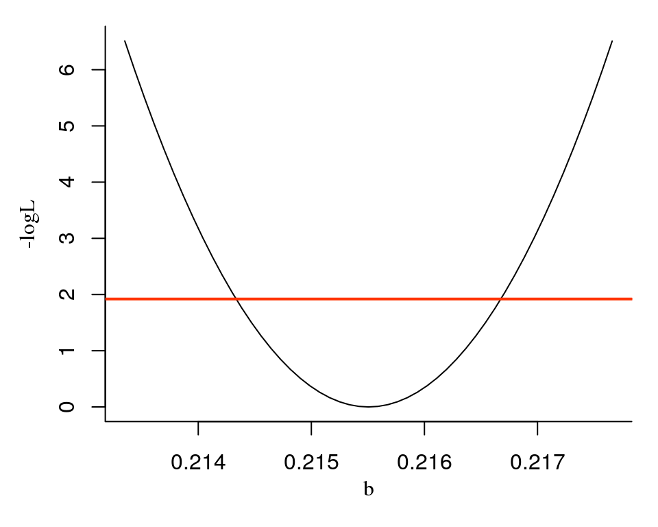
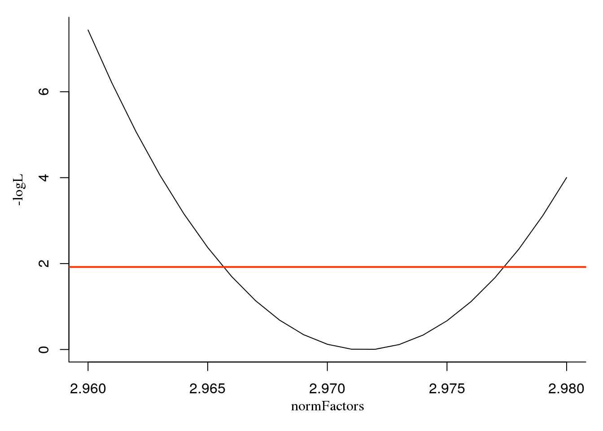
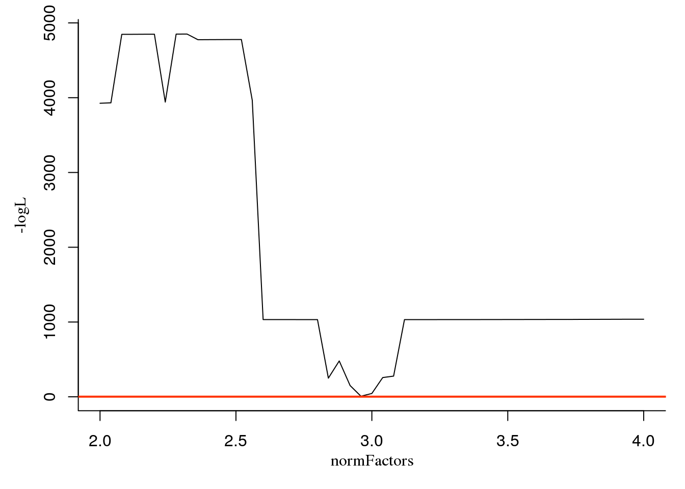

Profile likelihood
Uvarovskii Alexey
2017-07-04
Approximation of confidence intervals using only gene specific data
What does it mean and when can I use it?
The profile likelihood is estimated by optimising the whole likelihood function, having fixed a parameter under consideration to a certain value. Parameter values for different genes influence each other via shared parameters, for example, the normalisation factors or variance of the negative binomial distribution.
If there are not many genes in the data, that could not be a prolblem. However, usually experimentalists doing RNA-seq experiments are interested in measuring parameters of as many genes as possible, which results in thousands of genes in data tables. Optimising likelihood function for such cases can take a lot of computation time. Hence it can be more efficeint to use approximate fitting by neglecting the influence of individual gene parameters on the shared parameters.
The workflow
Let us use the model of experiment used in the vignette for application of pulseR to spike-ins-free data.
Get the model fit
Here we get the data and fit the result:
library(pulseR)##
## Attaching package: 'pulseR'## The following object is masked from 'package:stats':
##
## profileset.seed(258)
attach(pulseRFractionData)pd <- PulseData(
counts = counts,
conditions = conditions,
formulas = formulas,
formulaIndexes = formulaIndexes,
groups = fractions
)
opts <- setBoundaries(list(
a = c(.1, 1e6),
b = c(.01, .99),
normFactors = c(.1, 50)
))
initPars <- list(p = pulseRFractionData$par$p)
initPars <- initParameters(initPars, c("a", "b"), pulseData = pd, options = opts)
opts <- setTolerance(params = 1e-3, normFactors = 1e-2, options = opts)fit <- fitModel(pd, initPars, opts)Construct the profile likelihood
geneIndex <- 10
parName <- "b"
interval <- c(0.99,1.01) * fit[[parName]][geneIndex]
numPoints <- 51
pl <- profileOnlyGene(pd, fit, geneIndex, parName, opts, interval, numPoints = numPoints)We can see the result using the plotPL function:
plotPL(pl)
The red line corresponds to the 95% confidence level likelihood threshold. The 95%-confidence interval for the \(b\) parameter is defined from the crossing points of the threshold line and the profile likelihood curve.
Use the estimateCI function in order to estimate this points numerically:
geneIndexes <- seq_along(fit$b)
CIs <- estimateCIFixed(pd =pd, fit = fit, geneIndexes = geneIndexes,
parName = parName, options = opts)
CIs## [,1] [,2]
## [1,] 0.3478292 0.3503761
## [2,] 0.4646881 0.4664713
## [3,] 0.6811427 0.6825116
## [4,] 0.7631273 0.7648589
## [5,] 0.3616829 0.3639516
## [6,] 0.8853547 0.8860871
## [7,] 0.1327929 0.1360209
## [8,] 0.3358173 0.3377040
## [9,] 0.3550548 0.3570127
## [10,] 0.2143570 0.2166583Estimation of confidence intervals using the whole likelihood
If the normalisation factors are not fixed, or changes in a single gene parameter result in observed difference in the shared or normalisation parameters values, it is necessary to use the whole likelihood, which is a function of all shared and individual parameters.
plTotal <- profile(paramPath = list("b",10),
pd = pd,
par = fit,
options = opts,
interval = interval,
numPoints = numPoints)
plotPL(pl)
lines(plTotal$b, plTotal$logL, col=3, lty=2)
Quite narrow:
plTotal <- profile(paramPath = list("normFactors",2,1),
pd = pd,
par = fit,
options = opts,
interval = c(2.96,2.98),
numPoints = 21)
plotPL(plTotal)
Although we can see a broader view:
plTotal <- profile(paramPath = list("normFactors",2,1),
pd = pd,
par = fit,
options = opts,
interval = c(2.,4.),
numPoints = 51)
plotPL(plTotal)